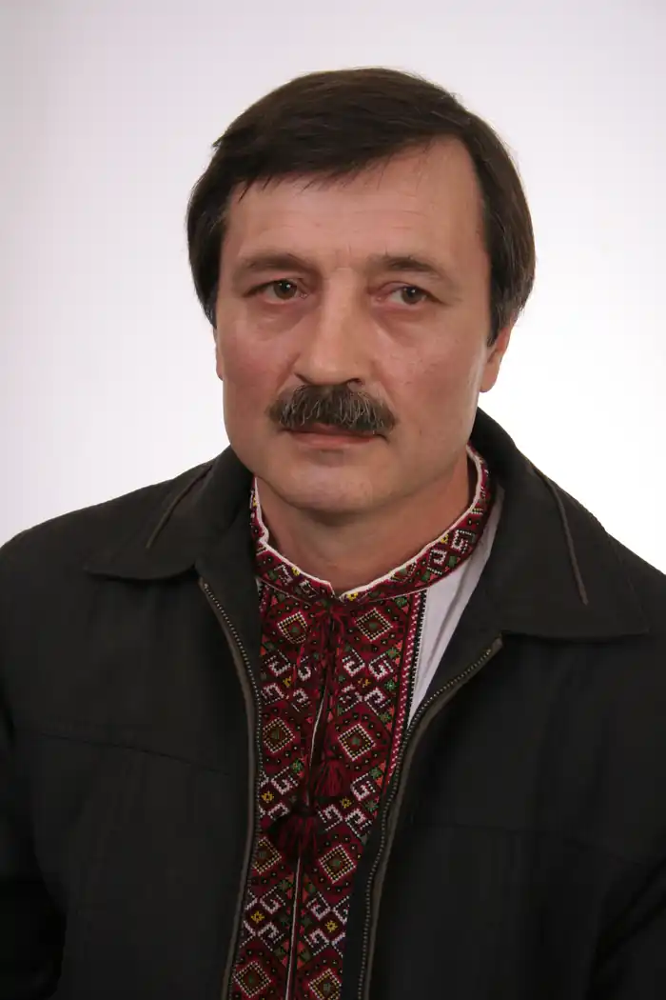

Олег Миколайович Гончаренко — український поет, прозаїк, публіцист, перекладач, краєзнавець, громадський діяч.
Народився 5 серпня 1959, Темиртау, Карагандинської області, Казахстан.
Член Національної спілки письменників України (1993). Член Національної спілки журналістів України (2014). Член Національної спілки краєзнавців України (2018).Член Міжнародної літературно-мистецької Академії України (2015). Член Міжнародної румунської академії міжкультурних взаємозв'язків Пауля Полідора (2016). Член Асоціації українських письменників (2017). Член Міжнародного клубу Абая, Алмати, Казахстан (2018). Нагороджений медаллю мелітопольської міської Ради "За внесок у розвиток міста Мелітополя" 2015). Нагороджений медаллю мелітопольської міської Ради "Волонтер України. За покликом душі" (2017). Нагороджений медаллю Національної спілки письменників України "Почесна відзнака" (2019). Нагороджений медаллю Івана Мазепи (2016) та медаллю Олександра Довженка (2017) Міжнародною Академією літератури і мистецтв України. Автор збірок поезій "Крони дитинства", "Петрогліфи", "Тяжіння сонця", "Мрія і любов", "Світ очей моїх", "Шесть часов вечера после весны", "Фантастичне купуасу", "Дорога крізь хату", "Храм голосів", "Собор откровень", "Серцебуття", "Напроти пам'яті", "Крилогія Вічної Гордії", "Конражур натхнення", "Мелітопольська паралель",, "Український порідник", "Столиця черешнева столиця", "Катрени оголошених картин" (навіяне живописом І. Марчука), "Медовий блюз", "За Емінеску… до себе", "Молитва за любов", "Астрофізми вічної гончарні", "Буремні буриме свободи", "Отражение — Відображення" (у співавторстві з Галиною Феліксон), "Віща тінь табуна", "В чеканні нової трави", "Нова братина", "Криму тамований скрик", "Теорія всього", "Серце у вогні", "Осінні дзвони — Autumn bells". романів "Зірка Вітанія" та "Я прошу вас — живіть!", збірки публіцистики "Наголоси і наголоси", науково-популярної краєзнавчої книги "Вертались запорожці з-за Дунаю", "Точки над І" (у співавторстві з Оленою Ришковою).